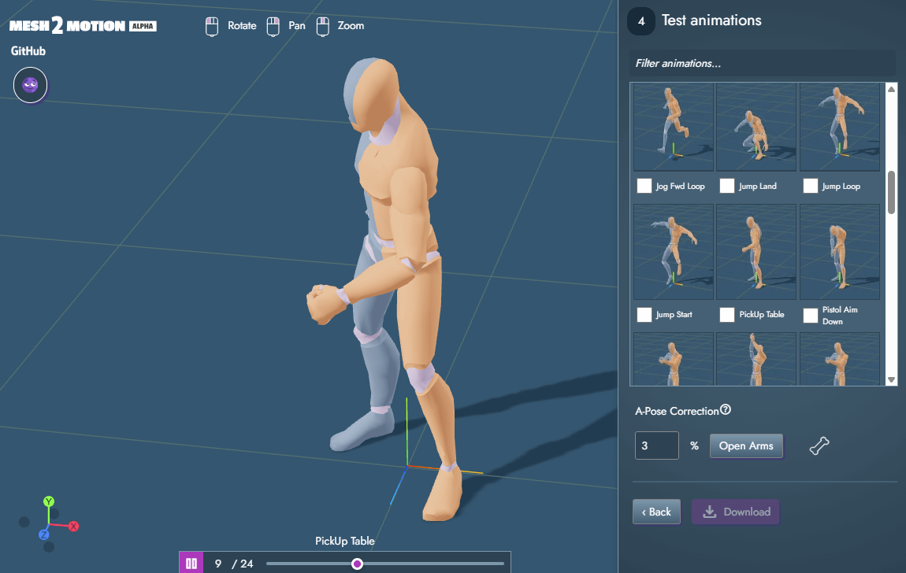
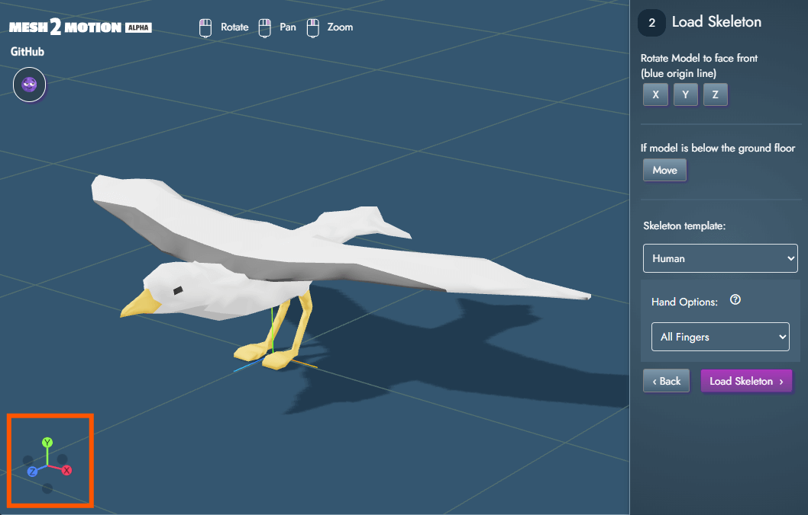

News
Update 4: Video Previews, Theming, Navigation improvements
8/14/2025 | Scott Petrovic
I was feeling productive last week outside of work, so I had a chance to work on some new features for the app. Eventually I will start concentrating more on "content" like the animations, but context switching for me is pretty painful. I will stick on platform features until things are more stable and feature complete enough.
✨ Animation video preview
I built out a system to bring in GLB files, cycle through each animation, and record them to small video files. This was kind of fun to figure out how to do. It should be easy to regenerate them in the future if there are changes. I had to update the UI a bit to accomodate for these larger animation items. It is all done via a URL. See the preview animatoin readme in the github repository for more information with how it works.
✨ Better navigation between steps
Each step has a back button if you do something wrong. I had this on one step before, but now it exists on all the steps. Someone mentioned this on github and I thought it was a good idea. It is probably the most useful if you accidently pick the wrong skeleton type, which I frequently do.
✨ Dark & light theme toggle
While I like dark themes, I occasionally just want a break from everything dark. A new toggle button appears where you can switch the theme. This setting gets saved in a cookie, so it should remember what theme you used last.
✨ Animation player

When you are in the animation listing, there is a mini player at the bottom where you can play/pause the animation, or scrub through it. Not sure how useful it will be, but it seemed like a fun idea.
✨ Mini 3d view helper
This was something I saw online that three.js added somewhat recently. You can click on the axis and the view will snap to the top, bottom, left, or right views. This is replacing the manual view buttons I had when editing the skeleton.
Other release notes
- Updated mouse icons making them a bit thinner.
- Hide the circle joint on the skeleton when you are on the animation listing step. They don't add any value at this point.
- Turned "show skeleton" option into a toggle icon button.
- When you enter the animation listing step, the skeleton will be hidden by default.
- Build number isn't working, so just remove that for now
- When positioning mesh after importing, do a little animation for the rotation for polish.
- Display a slightly more friendly name for animation names instead of the snake case names
- Only show the A-Pose options for humans. This helps convert characters in an A-Pose to a T-Pose which the animations expect.
- Slight fog effect added to help with transition between floor and background.
Next up...
If I don't get many feature requests. I might start trying to create more animations/skeleton for the tool. They won't be great, but it will be something. You can see my masterful bird test animation that currently exists. I will throw my Venmo account on my github page to potentially collect funds to hire an animator. I am not expecting any funds at this point, so be prepared for my janky animations.
Update 3: Undo System, Hand variations
7/31/2025 | Scott Petrovic
Added a few features that I just wanted to get out. I never know when work will consume my time, so it is probably better to have smaller releases more frequently than trying to do large cycle releases.
✨ Undo/Redo system
Moving bones around can be frustrating when there is no undo, so it has been added. This was something I had in the back of my mind when building this, but thought it was kind of a secondary priority at the time. I scanned my messages recently and noticed a blue circle by the github mailbox. Is this a message for someone giving me a large donation because all my hard work.... no. Alas, it was a bug report. A good one at that. For a person that is mostly isolated in a room all day, even a request or bug report is pleasant to witness. Oh yes, the usual shortcuts like Ctrl+Z work as well.
✨ Hand Variations

There are SO many finger bones in the human skeleton. Do we really need all of those? My model just has a brick for a hand.
That pretty much sums up why this next feature was added. When selecting a human skeleton, there are now a few options with the bones we keep for the hand. Less bones on the hand equals smaller file size. Less work to position the bones as well. The file size in the output isn't as big as I would have thought, but it is still pretty noticeable.
✨ Filter animations list
This might be useful when more animations are added. It seemed like a good idea.

Next up
Not really sure. I will let this sit for a bit and see if anyone actually uses this. All updates will be applied the next time you visit https://app.mesh2motion.org/. If you end up using this, rattle some buttons or text on the github page so I know people think this is useful.
Update 2: Weight Paint Previews
6/16/2025 | Scott Petrovic
This release includes numerous improvements and updates to weight painting, skeleton blending, and mesh handling features. There will probably be some fine tuning with the algorithm, but it now can deal with more extreme deformations.
✨ Live weight painting display
Automatic previews with how bones will be skinned to 3d mesh. Move your bones around and the mesh will update its preview automatically. You can also toggle between this weight painted view and the normal texture view.
✨ Better algorithm for weight blending
Much improved blend weights for extreme deformations. There are two separate algorithms now in the code that take into account these two situations.
✨ UI toggles for bone controls

Improved UI toggle for changing between translate and rotate bone. Added UI toggle to change between weight painted model and textured
Other release notes
- Bone Positioning: Left click selects bone joints now
- Bone Positioning: Disable ability to move the root bone so that stays at origin
- 3D skeletons: Improved by adding "tip" bones. Three.js needs these to be able to manipulate bone directions
- 3D Models: Bird and Fox have higher polygon count to help see deformations with blending weights
All updates will be applied the next time you visit https://app.mesh2motion.org/
Update 1: Time to Fly!
5/22/2025 | Scott Petrovic
I will try to do these updates to summarize anytime I push out a set of changes. I thought about just slowly pushing stuff out to the site, but that seemed a bit chaotic for some reason. This app will remain in alpha until I decide it is feature complete and stable enough. Then I will move it to Beta.
This update focuses on adding a new skeleton type. I do have terrible focus, so it also includes other things. I want to really think about this application from a general rigging standpoint, so I want to think about how every change would affect every rig type (animal, human, bird, etc). I have more ideas ready to start coding, as well as make a few issues that people have contacted me about for a better experience.
Release Notes for Update 1- Feature: New Bird skeleton type added with a few animations
- Importing Model: When 3d model is imported, scaling only happens if it is too large or very small
- Importing Model: New button to move the mesh data above the floor. This happens when the mesh origin is in the model's center.
- Importing Model: Fixed Z-rotation when rotating model. It wasn't hooked up before
- Skinning: Added a debug option to show weight painted model for reference
- Animation: Keep the hip bone transform data with all skeleton types (previously only worked for humans)
- Blender 3D Source: More high-poly reference model for fox to help simulate deformations better
- Blender 3D Source: Added bird model along with separate animation file
- Blender 3D Source: Make bone naming more consistent across skeleton types
- Animation List: (Code-only) Allow for appending different sets of animations when viewing listing (Human now has an extra custom YMCA on top of the Quaternius animation data)
- Animation List: Have animation progress bar with currently playing animation
- Animation List: Alphabetize animation names to make finding easier
- Editing Skeleton: Add ability to rotate bones when editing skeleton
- UX: Show hover effect when mouse is over a joint that will be selected for visual feedback
- UX: Have skeleton joints and bones keep same size regardless of zoom level
- UI: Used fixed positioning for header so right click will work at the top of application
- Performance: Very large speed up for skinning process. This is because of caching and other optimizations
All updates will be applied the next time you visit https://app.mesh2motion.org/
Mesh2Motion Enters the Fight!
5/11/2025 | Scott Petrovic
Hello. This is a news post to represent the original release of the site and application. Updates will be sporadic as I am the only person working on this. I have a bit of a vision with how this will progress, so I probably won't be taking too many external contributors right now.